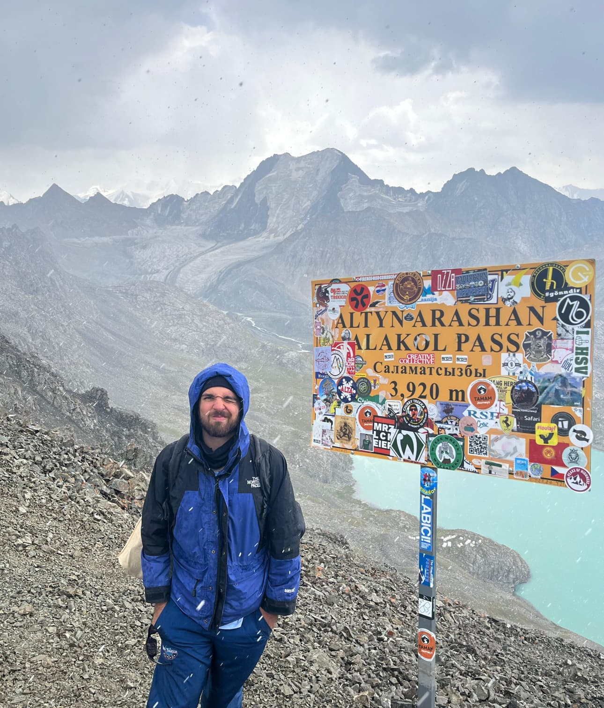

greetings from somewhere high✉ open me
to: whoever is curious
from: arturo
from: arturo
✂ - - - - - tear here - - - - -
tap the postcard
some thoughts
- i believe that approximating the data manifold in latent space is the best way to learn.
- maybe it would be better if our artificial neural networks resembled the biological ones a bit more.
- i wonder how many different ways there are to build an intelligence as good as the brain.
- learning is compression.
find me elsewhere
- Backdoor Detection & Mitigation in Neural Networkssurvey
- Spiking Neural Networks: A Comprehensive Literature Reviewsurvey
- Turning Neural Networks Against Each Other: Multi-Layer Backdoor Detection in Deep Neural Networksmaster thesis
- Chatbot for Patient Guidance During Preparation of Colonoscopybachelor thesis